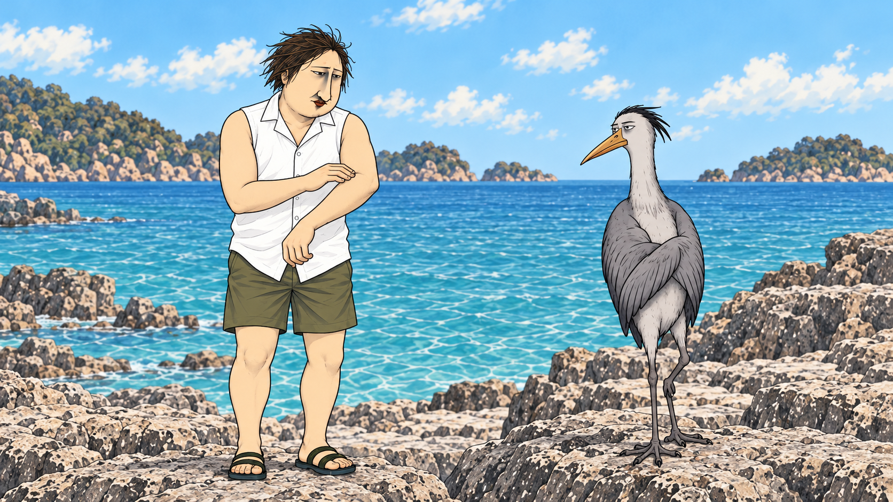

MENS salon 毛太郎 / 8秒・確認用
脱毛後のシーンの動作確認です。全編の完成版ではありません。
今の画像を動画の開始フレームに固定。男性と鳥の顔つき・服装を基準に、腕を確かめる動作と小さなリアクションを生成しています。
音声は前の動画からそのまま使用。映像・音声とも原速度で、尺を伸ばす編集はしていません。

顔つき、動き、声の組み合わせをご確認ください。
確認動画を開く・保存する
前回の全編版